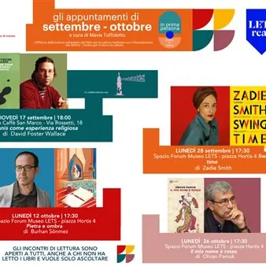

da gio 17 set a lun 26 ott
LETSread: gli appuntamenti di settembre e ottobre
Il progetto LETSread torna con quattro nuovi appuntamenti del ciclo “In prima persona” dedicati alla letteratura contemporanea, tra sport, memoria, identità e grandi vicende della Storia. Giovedì 17 settembre 2026, ore 18:00 Antico Caffè San Marco, via Battisti 18 Il tennis come…
 Indicazioni
Indicazioni
- Costi e prenotazioni
- Costo non indicato · Prenotazione non indicata
- Programma
- Programma da verificare. Apri la fonte ufficiale per orari e possibili aggiornamenti.
- In caso di maltempo
- Nessuna indicazione specifica pubblicata.
- Note
- Acquisito automaticamente dalla fonte.
L’EVENTO
Descrizione completa
Il progetto LETSread torna con quattro nuovi appuntamenti del ciclo “In prima persona” dedicati alla letteratura contemporanea, tra sport, memoria, identità e grandi vicende della Storia. Giovedì 17 settembre 2026, ore 18:00
Antico Caffè San Marco, via Battisti 18
Il tennis come esperienza religiosa di David Foster Wallace Un appuntamento speciale, in collaborazione con il Triestebookfest, nell’ambito della mostra FLYING RACQUETS. Il tennis in un millesimo di secondo , dedicata da Ray Giubilo al mondo del tennis attraverso lo sguardo della fotografia. La mostra è visitabile fino al 20 settembre 2026 al Magazzino 26 del Porto Vecchio di Trieste, Sala Leonor Fini. Il testo di David Foster Wallace, tra i più originali e acuti scrittori americani contemporanei, prende il tennis come punto di partenza per una riflessione più ampia sulla perfezione, sul talento, sulla disciplina e sulla dimensione quasi spirituale dell’esperienza sportiva. Wallace racconta il gioco attraverso la propria straordinaria capacità di osservazione, trasformando il gesto atletico in una meditazione sulla condizione umana. David Foster Wallace (1962–2008) è stato uno scrittore, saggista e docente statunitense, autore di romanzi e raccolte di racconti e saggi che hanno profondamente influenzato la letteratura americana contemporanea. Lunedì 28 settembre 2026, ore 17:30
Sala Forum LETS – Piazza Hortis 4
Swing Time di Zadie Smith Con Swing Time LETSread torna nella sua sede abituale, proponendo un romanzo che intreccia amicizia, danza, identità e disuguaglianze sociali attraverso la storia di due ragazze accomunate dalla passione per il ballo, ma destinate a seguire percorsi molto diversi. Sullo sfondo, Londra, New York e l’Africa diventano luoghi attraverso cui interrogarsi sulle possibilità e sui limiti dell’emancipazione individuale. Zadie Smith , nata a Londra nel 1975, è una delle voci più importanti della letteratura anglofona contemporanea. Nei suoi romanzi affronta con ironia e profondità temi come identità, multiculturalismo, classe sociale e appartenenza. Da ottobre gli incontri LETSread si concentrano su “ La Storia e le storie ”, dedicato al rapporto tra le vicende intime dei protagonisti e la Storia. Per la ripartenza, il programma propone due grandi autori della letteratura turca contemporanea, entrambi da tempo attesi nel calendario di LETSread. Lunedì 12 ottobre 2026, ore 17:30
Sala Forum LETS
Pietra e ombra di Burhan Sönmez Un romanzo sospeso tra memoria personale e storia collettiva, che attraversa la Turchia del Novecento raccontando le ferite della violenza politica, la perdita e il potere della memoria. Al centro della narrazione, il ritorno alla vita di un uomo che, dopo anni di prigionia e torture, deve ricostruire la propria identità e confrontarsi con il passato. Burhan Sönmez , nato in Turchia nel 1965, è scrittore e avvocato. I suoi romanzi, tradotti in numerose lingue, affrontano spesso i temi della memoria, dell’esilio, della violenza politica e della dignità umana. È stato presidente del PEN International. Lunedì 26 ottobre 2026, ore 17:30
Il mio nome è rosso di Orhan Pamuk Ambientato nella Istanbul del XVI secolo, durante il regno del sultano Murad III, il romanzo costruisce un affascinante intreccio di amore, mistero e riflessione sull’arte. Attraverso le voci di numerosi personaggi – miniatori, artisti, assassini e figure della corte ottomana – Pamuk mette in scena il confronto tra la tradizione della miniatura orientale e la nuova concezione occidentale della rappresentazione. Orhan Pamuk , nato a Istanbul nel 1952, è uno dei maggiori scrittori turchi contemporanei. Le sue opere, tradotte in tutto il mondo, esplorano il rapporto tra Oriente e Occidente, memoria, identità e modernità. Nel 2006 ha ricevuto il Premio Nobel per la Letteratura . Gli incontri sono aperti a tutti, anche a chi non ha letto il libro e a chi vuole solo ascoltare. Tutti i libri proposti sono disponibili in diverse copie nelle biblioteche del Comune di Trieste.
IL PROGRAMMA
Programma e orari
Appuntamenti raccolti dalle fonti elencate. Dove manca un orario, non è ancora disponibile in questa scheda.
Programma pubblicato
- Dal 2026-09-17 al 2026-10-26
INFORMAZIONI UTILI
Prima di partire
- Controllare la fonte prima di partire.
ORGANIZZAZIONE